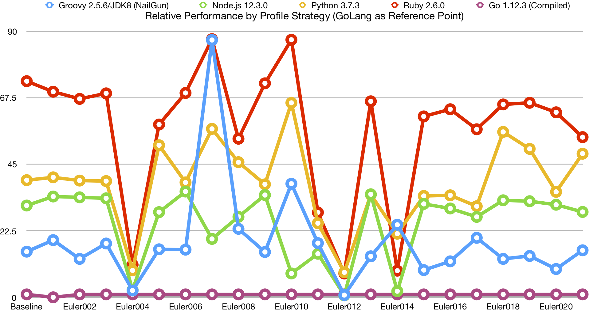
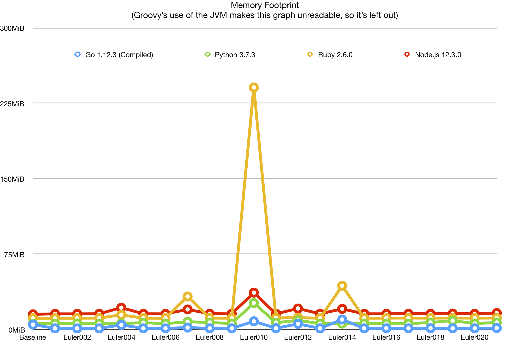
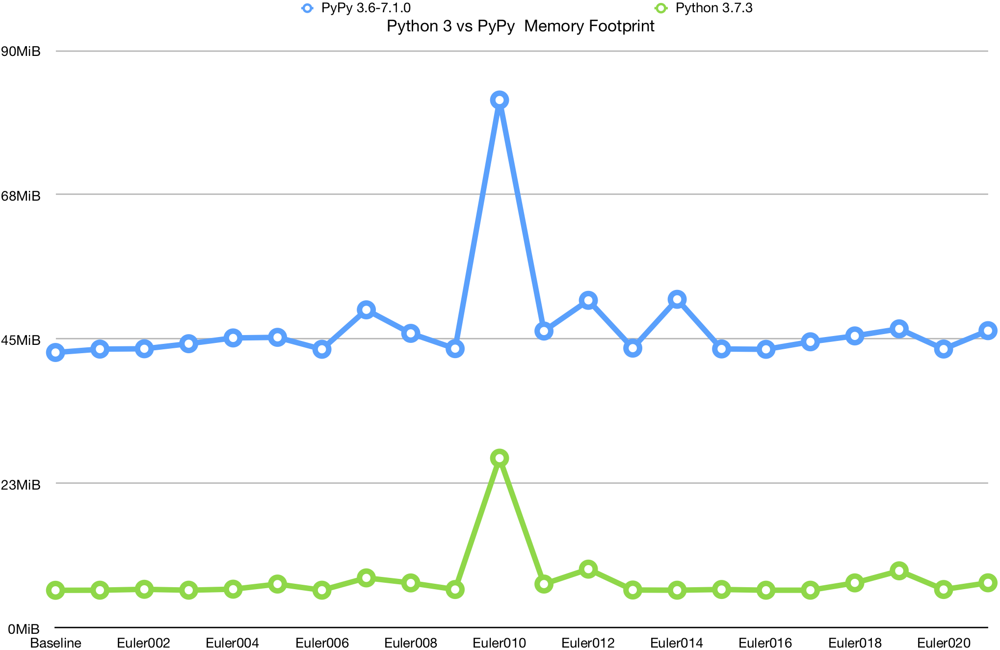
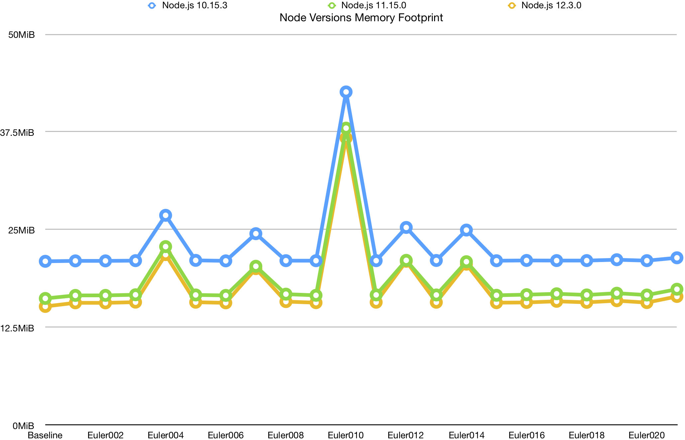
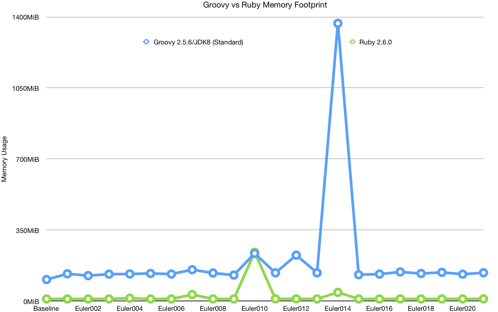

Profiling Language Performance with Project Euler
I’ve been sitting on a side project for a while, working on it when I have time. The project in question is Project Euler - specifically, implementing Project Euler in a few different programming languages. Pretty soon after starting, I realized that I had an opportunity to compare the performance of these implementations across not only different programming languages, but also across different ways of running the code in question and optimizing it to not just reach the right answer, but to maximize performance in measurable ways. Most Project Euler solutions I’ve seen haven’t quantified their performance in this way, and when they do optimize, usually only optimize in favor of one metric, usually the “Clock Time” taken to compute the answer. Here, I’m sitting on a lot of data – currently, 21 problems (and a control) across 5 different programming languages, as well as different performance approaches for the differerent languages.
So today, sitting in front of my grand total of 5 programming languages, expressed using 9 different profilers, measuring 4 metrics across 22 programs, for a total of 792 data points, I have a golden opportunity to don my lab coat and play scientist for a day, and look at the performance of several different progrramming languages and even different runtimes for the same language.
Methodology #
When writing problems 1 through 20 (and 67), I generally implemented it in Golang first, then ported the logic to other programming languages. I also avoided third-party libraries, because those track poorly across languages and profiling strategies. I kept the overall strategy of the implementations relatively uniform, with two exceptions.
- If a language is able to natively, cleanly, and easily parrallelize operations, I did so.
- If a language offers language features that can simplify the implementation, I use them.
The first means that certain languages have an advantage in clock time, and the second means that some implementations of languages have an advantage over the others. These advantages are intentional, as the alternative of not using language features when available would obfuscate these advantages.
Profiling is done with a custom-built binary which is used to profile tasks. It can be thought of
as being relatively close to the GNU time utility, simply recording and outputting the metics
reported by the kernel in a programmatically readable way. The metrics reported are user time,
system time, and maximum resident set size. In addition, it makes a “best effort” to record clock
time, though as this is recorded by the profiler itself and not the kernel, it is not as accurate.
The profiler takes a sample of a given number or runs, usually 10 (with the exception of the Groovy
Direct profiler, which uses 3, due to the JVM startup making it take too long). The average of these
samples is what I’m using in the data comparisons.
The profiling is orchestrated by a python script, which uses docker to manage the environments in which it’s run. Docker ensures optimal conditions for the software, but introduces substantial latency to the invocations. In order to offset this latency, the profiler binary mentioned above is run from within the docker container and the metrics reported back up to the orchestrator.
The source code for the profiler and the orchestrator can be found here.
The results are written out to JSON, YAML, and CSV. I’m working from the CSV format, because it maps easily into spreadsheet software for making graphs. You can find the raw data here. Also included therre are hardware specifications for the machine that generated this data.
Profiling Strategies #
I use a total of 9 different profiling strategies. Each profile strategy is a different way of running a given problem. For the most part, they’re simple and straightforward, but some languages have more than one profiler, or have a profiler that gives special considerations.
Golang #
Golang uses the Go 1.12.3 (Compiled) profiler. It compiles the go program to a binary before
running it, and does not include compilation time in the profile result. It does not use any extra
compilation options when doing so.
Groovy #
Groovy supports two profiling strategies, Groovy 2.5.6/JDK8 (NailGun), AKA Groovy Nailgun, and
Groovy 2.5.6/JDK8 (Standard), AKA Groovy Direct. NailGun uses Facebook’s
NailGun, a persistent JVM framework, to offset the cost of
JVM spinup. The downside of this is that it also eliminates the Kernel’s ability to accurately
record metrics. As a result, NailGun is used for Clock Time comparisons, while Direct is used for
all kernel metrics.
Node.js #
Node is run simply by running node against the script for the problem in question. It does,
however, have a total of 3 profilers for different versions of Node.js: Node.js 10.15.3,
Node.js 11.15.0, and Node.js 12.3.0.
Python 3 #
Again, this profiler (Python 3.7.3) usually just consists of running Python3 against the script.
However, it does have an additional profiler, PyPy 3.6-7.1.0, which uses the PyPy implementatio
of Python (as opposed to CPython), to compare metrics across the two Python implementations.
Ruby #
This profiler, Ruby 2.6.0, simply uses the ruby interpreter.
Clock Time Results #
Clock time seems the easiest and most straightforward way to start. It’s also the metric that has arguably the most impact on user experience.
Comparing the direct times is not a very informative graph to look at, because the difference in computational complexity between problems skews points on the graph too much for comparisons between profilers to show up on the graph. I control for this by instead doing a relative comparison against the Golang implementation.

Although this chart offers some pretty clear trends in terms of relative clock time performance between the five languages, I suspect that is likely due to startup times of each language, given that the problems where behavior differs significantly are the same problems which take a long time. Let’s look at the average clock time, relative to Golang:
| Go 1.12.3 (Compiled) | Groovy 2.5.6/JDK8 (NailGun) | Groovy 2.5.6/JDK8 (Standard) | Node.js 10.15.3 | Node.js 11.15.0 | Node.js 12.3.0 | PyPy 3.6-7.1.0 | Python 3.7.3 | Ruby 2.6.0 |
|---|---|---|---|---|---|---|---|---|
| 1.0 | 18.9 | 705.4 | 44.4 | 45.1 | 25.3 | 35.7 | 38.4 | 57.3 |
We can see that the performance of just about everything is pretty terrible when compared to Golang. However, this does seem a bit extreme. Groovy Direct is particularly bad, given the startup cost of the JVM. Problem 014, however, takes much longer and are much more computationally intensive, which should give us a better idea of long-running performance:
| Problem | Go 1.12.3 (Compiled) | Groovy 2.5.6/JDK8 (NailGun) | Groovy 2.5.6/JDK8 (Standard) | Node.js 10.15.3 | Node.js 11.15.0 | Node.js 12.3.0 | PyPy 3.6-7.1.0 | Python 3.7.3 | Ruby 2.6.0 |
|---|---|---|---|---|---|---|---|---|---|
| Euler014 | 1.00 | 24.6 | 20.1 | 2.08 | 2.03 | 2.08 | 0.736 | 21.5 | 9.02 |
Now, there’s a lot of interesting data in this row, and I promise we’ll get to them later. It’s also worth noting that Golang’s implementation of this problem is multithreaded.
We can see that, for the most part, the performance of other runtimes improves dramatically for longer problems, aside from Groovy. This adds substance to the idea that startup time is the biggest factor for most of these profilers is startup time. Let’s look at the absolute and relative baseline times for all of these profiles:
(Note: “Baseline” refers to a file I created for each language with the bare minimum required to compile and run, and serves to act as a reference point.)
| Method | Go 1.12.3 (Compiled) | Groovy 2.5.6/JDK8 (NailGun) | Groovy 2.5.6/JDK8 (Standard) | Node.js 10.15.3 | Node.js 11.15.0 | Node.js 12.3.0 | PyPy 3.6-7.1.0 | Python 3.7.3 | Ruby 2.6.0 |
|---|---|---|---|---|---|---|---|---|---|
| Absolute | 0.000989 | 0.0153 | 0.867 | 0.0608 | 0.0572 | 0.0307 | 0.0414 | 0.0392 | 0.0723 |
| Relative | 1.00 | 15.5 | 877 | 61.5 | 57.8 | 31.1 | 41.9 | 39.7 | 73.2 |
Comparing the relative numbers with those from our overall averages, we can see that they track the averages very closely. While this tells us a lot about startup time, it means that we have to rely primarily on 014 for tracking long-term performance, and unfortunately, it tells us that most of our data points are not measuring much more than startup time. How unfortunate.
But all is not lost, as not only is that valuable information, but 014 gives us a basis for reasonable comparisons between them. Let’s take a look at that table again, and pull some of those interesting tidbits out:
| Problem | Go 1.12.3 (Compiled) | Groovy 2.5.6/JDK8 (NailGun) | Groovy 2.5.6/JDK8 (Standard) | Node.js 10.15.3 | Node.js 11.15.0 | Node.js 12.3.0 | PyPy 3.6-7.1.0 | Python 3.7.3 | Ruby 2.6.0 |
|---|---|---|---|---|---|---|---|---|---|
| Euler014 | 1.00 | 24.6 | 20.1 | 2.08 | 2.03 | 2.08 | 0.736 | 21.5 | 9.02 |
First of all, I’d like to give special kudos to Node.js. Given its reputation and nature, it seems natural to think of node as a terribly underperforming language. However, it’s actually competitive with Golang here. Unfortunately, we don’t see significant improvements in performance over node versions.
Second, a huge kudos to PyPy. Where CPython took 21.5 times as long as Golang to complete the program, PyPy actually outperformed the compiled language, running almost 30x as fast as CPython. This is quite a feat for an interpreted language. This is only made more impressive when you consider that the golang implementation was multithreaded, where the Python implementation was not. We’ll look more at PyPy later, in the section PyPy vs CPython.
However, Groovy performed quite poorly here when compared to everything else. This may be poor programming on my part, but I suspect my solutions the Project Euler problems simply don’t play to Groovy’s strengths.
Just for fun, let’s compare the real time numbers to the sum of system time and user time for the Euler014 problem (leaving out NailGun, as times will not be accurate):
| Go 1.12.3 (Compiled) | Groovy 2.5.6/JDK8 (Standard) | Node.js 10.15.3 | Node.js 11.15.0 | Node.js 12.3.0 | PyPy 3.6-7.1.0 | Python 3.7.3 | Ruby 2.6.0 |
|---|---|---|---|---|---|---|---|
| 1.000 | 7.236 | 0.670 | 0.651 | 0.669 | 0.232 | 6.794 | 2.846 |
Measuring these metrics eliminates the benefits of multithreading (actually, it slightly penalizes them), and better shows the raw performance of each profiler’s methods. We can see that node is substantially outperforming golang, and that PyPy dramatically outperforms Golang in this specific metric.
I suspect that Golang’s shortcoming here mostly has to do with the way I used slices in the Euler014 problem, relying on append and not pre-provisioning slices to a given capacity. Regardless, PyPy’s performance remains incredible.
Memory Footprint #
To measure memory footprint, I’m using Maximum Resident Set Size. It’s not a perfect measurement, but given the size of these problems, it should be appropriate. First, let’s look at the baselines for the profilers (Leaving out NailGun):
| Go 1.12.3 (Compiled) | Groovy 2.5.6/JDK8 (Standard) | Node.js 10.15.3 | Node.js 11.15.0 | Node.js 12.3.0 | PyPy 3.6-7.1.0 | Python 3.7.3 | Ruby 2.6.0 |
|---|---|---|---|---|---|---|---|
| 5096 | 109389 | 21459 | 16595 | 15550 | 43976 | 6036 | 11499 |
The first thing that jumps out is how incredibly expensive Groovy is. Even for a no op, we have to spin up the JVM, which is incredibly expensive.
Second, we can say the same thing about PyPy. 7 times bigger foorprint than CPython. CPython though, is very impressive, only taking about 20% more than Golang’s empty binary. Ruby and newer versions of Node are also respectable, with Kudos to Node for showing such dramatic improvement since version 10.x. Perhaps PyPy’s frontloading of memory is partially what’s responsible for its phenomenal performance with raw python code.
That aside, let’s look at a graph of languages’ memory footprint over the various problems. Note that Groovy is left out of this graph, due to its peak of 1.4GB on Euler014 skewing the graph to the point of unreadability:

This graph has relatively few interesting points. We can see that Ruby performs particularly poorly on certain problems because it doesn’t seem to handle deferred execution quite as well as the other languages here, in some cases. We can also see that, at least for my implementations of these problems, overall memory usage is primarily determined by the baseline memory consumption, so there’s a limit to what we can learn outside of edge cases.
However, the comparisons for PyPy and CPython, and for the various versions of Node.js, can show us a lot:

We can see that PyPy performs dramatically worse than CPython. Aside from the much larger baseline memory footprint, it seems to have much worse performance in this area as the general memory demand increases.

While the later versions of Node consistently outperform the older versions, the effect doesn’t seem to scale, and instead it seems to simply be tracking the improvements in the baseline, offering only a static benefit. Of course, this benefit is substantial, but I was hoping to see bigger improvements for large datasets.
Finally, let’s look at the comparison of Groovy and Ruby:

Why am I comparing Groovy to Ruby? Because Ruby was the next worst performing by this metric, and it was the best I could get when it came to making this graph readable.
The issue, as usual, is problem 014. I suspect that the bulk of the problem goes to using such an old version of the Java Development Kit, but even with JDK 11, performance is still terrible compared to all other implementations. Unfortunately, I feel like deferred execution has been treated like a second-class citizen in the JDK, even with Java streams, lagging behind the other languages in functional programming functionality and performance.
PyPy vs CPython #

Well, we certainly saw some interesting results for comparisons of CPython and PyPy. CPython’s miniscule memory footprint is certainly a strong asset, but the memory cost of PyPy would likely more than offset the additional memory usage for most use cases where it’s viable. Where we see the greatest benefits in particular, is in CPU Time for large degrees of complexity.
So why is this? Well, let’s start with what PyPy is, according to pypy.org:
PyPy is a replacement for CPython. It is built using the RPython language that was co-developed with it… with a Just-in-Time compiler.
And there it is - JiT compilation is likely the key to its performance for larger programs. This gives it particularly good performance when running a lot of Pure Python code. One of the tricks to this is that PyPy actually has a huge amount of overhead when loading C++ extensions, which are the typical answer to the problem of making CPython reasonably performant for number crunching.
My parameters for developing these solutions - particularly limiting third-party libraries, means that PyPy has almost a perfect use case in this instance. However, the performance of PyPy in this case is still illustrative of its utility - for code that can be converted to pure python, it is incredibly performant.
Conclusions #
The most obvious conclusion that can be drawn is that, for most cases we’ve been looking at, Golang is a phenomenal tool. The miniscule memory footprint and phenomenal all-around performance is wonderful to work with - it’s as popular as it is for a reason. And there’s a reason my profiler is written in it. The benefits of “truly” compiled languages, like Golang and Swift, are substantial, especially these days when Software is written with so much bloat. The parallelism techniques that are available in Groovy are also very welcome.
All that said, interpreted languages, particularly Node.js, perform extremely well and are closing the gap in terms of performance. I often here Node and Electron decryed as slow technologies, but looking at the real performance data I have in front to me, it seems like perhaps poor coding is a more likely culprit than the underlying technology. I use the editor Visual Studio Code, which is built on Node.js, and it runs better than many of the IDEs I’ve used written on supposedly more performant technologies. That said, Node does seem to be relatively memory-hungry.
While Groovy deals poorly with particularly large data sets and has huge startup time, it does seem to be relatively fast. That said, I don’t know that I’d favor it too heavily against jRuby or Jython, or even Java. It seems to me like Groovy has a bit of an identity crisis, not knowing for sure what it wants to be or accomplish, and so it doesn’t accomplish a whole lot aside from being a scripting language that runs on the JVM.
Ruby’s conventions are powerful, but its performance is anything but. Coming in last (other than Groovy), it doesn’t seem to be particularly good at anything. That said, its elegance does make it well-suited to IO-heavy operations, abstractions, and relatively simple code problems. As an example, it is very well-suited to simple scripts or applications like Homebrew, where the simplicity of the conventions can be used to great effect.
Finally, Python. Python’s tiny footprint and strong support for deferred execution mean it does far better when it comes to memory usage than most other languages in its class, and the versatility of being a scripting language is definitely handy. That said, the computational performance for CPython is disappointing, though not surprising, given that it relies so heavily upon C++ Extensions to make Python code performant. PyPy’s performance on the other hand, takes all the advantages of Pure Python and tacks on a massive benefit to performance - for those looking to write applications in Python, PyPy is definitely worth considering as a platform for the performance benefits alone.
Tomorrow #
So what’s next? Well, although this dataset was interesting, it’s lacking in a lot of ways. The relative simplicity of the first 20 Project Euler problems means that we don’t get to see much beyond the baseline startup costs, to the point that most of this blog post is focused around a single problem. Likewise, the profiling system lacks maturity, and I intend to iterate upon it as well.
Toward that end, I intend to continue this project going forward, and to develop more solutions across these languages to better observe that behavior. That said, it seems likely at this point that I may discontinue Groovy. It seems to perform poorly for large problems, and I may need to move away from it to keep the overall profiling system clean. While I learned a lot about the JDK, I just don’t think these problems are well suited to Groovy in particular, and perhaps the JDK in general. I’ll do some research to see if perhaps Clojure or Kotlin would fill those shoes better.
Meanwhile, there are other profilers I’d like to create, namely disabling the garbage collector on Golang, and creating a profiler for Python that utilized Python optimization. I may also try adding C# or F#, to get a language built on the .NET framework, and perhaps try again with Swift, though compilation of small, standalone binaries can get complicated.
All in all, a very promising start to this project, with plenty left to do.